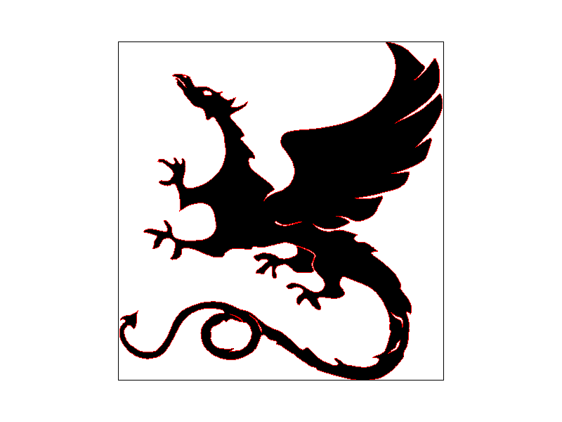
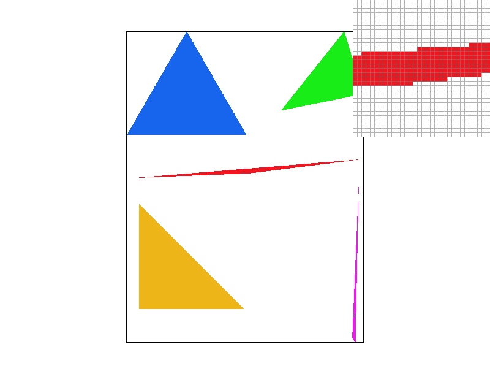
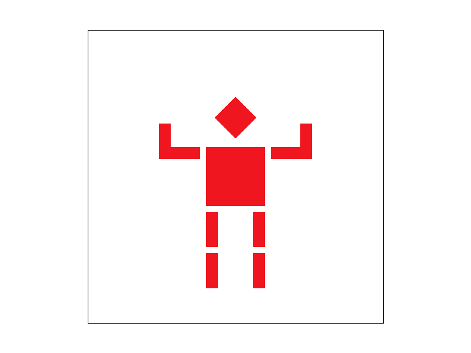
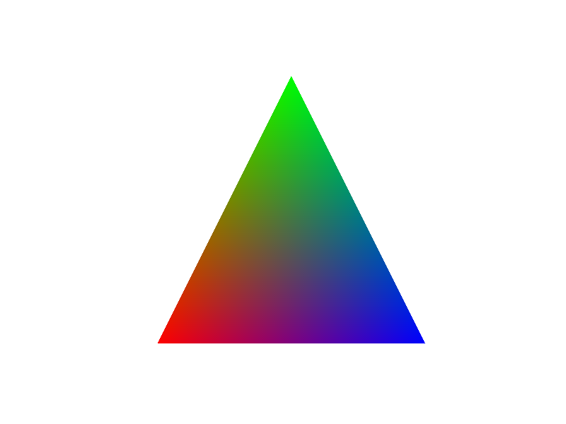
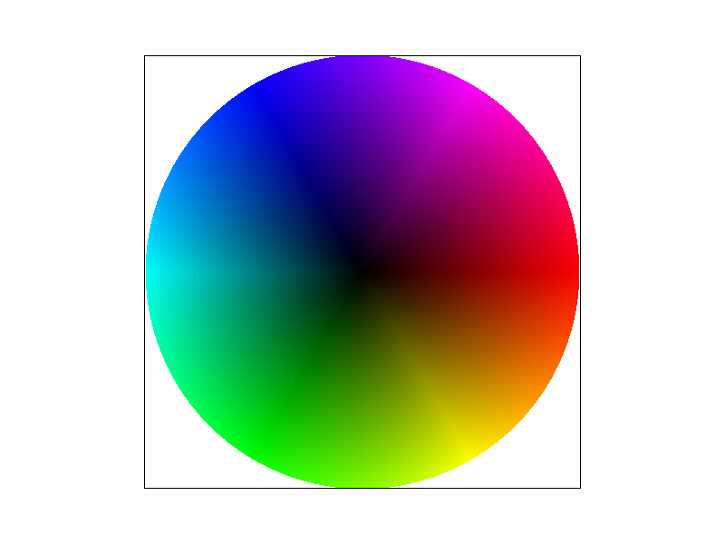
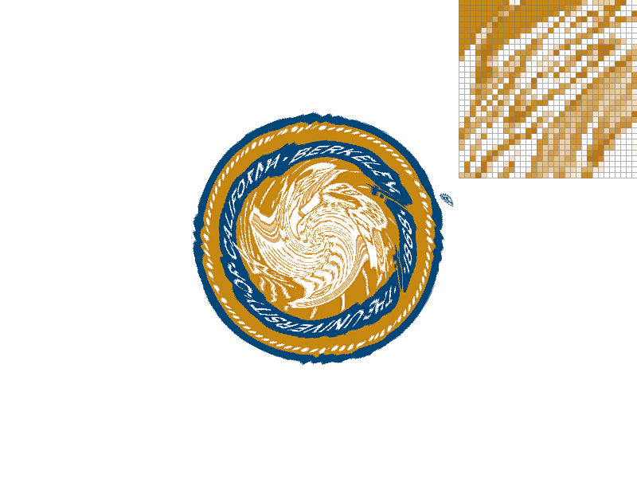
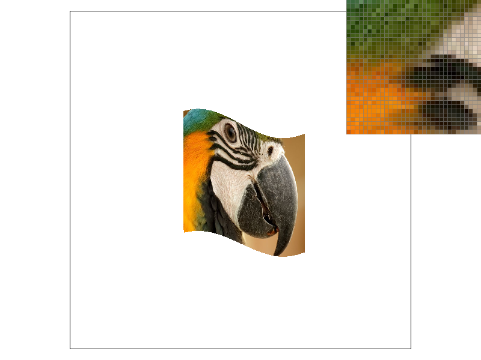
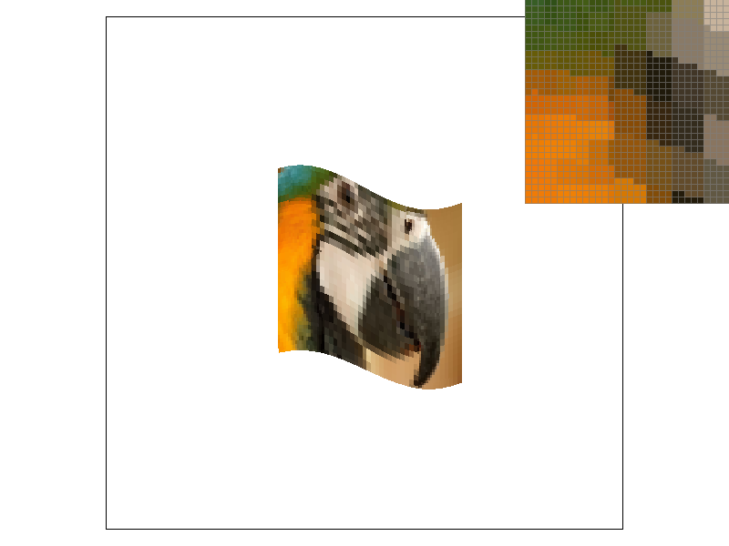
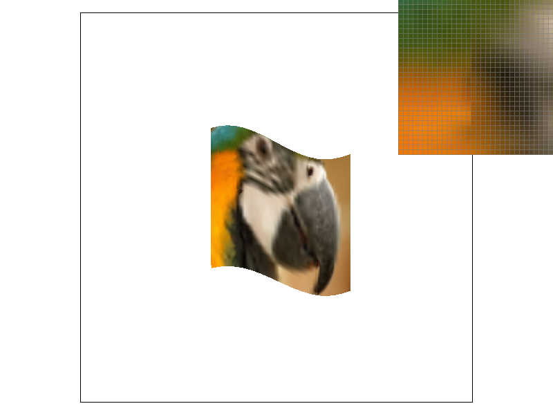

CS184/284A Homework 1 Write-Up
Link to webpage: cs184.eecs.berkeley.edu/sp25
Link to GitHub repository: (TODO) https://github.com/cal-cs184-student/sp25-hw1-lunacute

Overview
In this assignment, I implemented a basic 2D rasterizer that can draw colored and textured triangles with various sampling techniques. The rasterizer supports supersampling for antialiasing, barycentric coordinates for color interpolation, and different texture sampling methods including bilinear sampling and mipmapping. Additionally, I implemented 2D transformations to manipulate shapes within the rasterizer.
Task 1: Drawing Single-Color Triangles
In this task, I implemented a basic triangle rasterization algorithm. The procedure begins by determining the bounding box of the triangle, computed from the minimum and maximum coordinates along the x and y axes of its three vertices. Each pixel within this bounding box is then tested for inclusion in the triangle.
The inclusion test is performed by passing the pixel coordinates into the line equations \( L(x,y) = -(x-x_0)(y-y_0) + (y-y_0 x_1- x_0) \). One thing to keep in mind is ensuring triangle's vetices order are in counterclockwise, so that our edge function is valid. If all equation functions return positive value, it is classified as interior to the triangle, and its color is set to the triangle’s assigned color.
To handle boundary cases, I adopted the top-left rule: pixels lying exactly on an edge are considered inside if the edge is either a top or a left edge, and outside otherwise. This convention guarantees that every pixel is covered by at most one triangle, thereby avoiding double counting along shared edges.
I also explored the possibility of using the incremental triangle rasterization technique introduced in lecture as a performance optimization. However, I found the implementation complexity relatively high compared to its benefits in this context. Since the baseline algorithm already provides sufficiently fast performance for the assignment requirements, I ultimately chose to retain the basic rasterization approach.
|

|
Task 2: Antialiasing by Supersampling
In order to do the supersampling, I modified the rasterization process, including rasterizer function and resolve framebuffer function. In the rasterizer function, I first calculate the unit of each subpixel based on the number of samples per pixel.
Then, I iterate over all subpixels within the bounding box. For each subpixel, I determine if they are inside the triangle using the same line equation method as before. If it does, I fill in the color to its corresponding position in the framebuffer.
Finally, in the resolve framebuffer function, I average the colors of all subpixels within each pixel to get the final color. This averaging process effectively smooths out the jagged edges that can occur in rasterized images, resulting in a more visually appealing output.
It is worth noting that while supersampling significantly improves image quality, it also increases computational load due to the higher number of samples processed.
|

|
|
|
|
Task 3: Transforms
Utilizing my implementation of 2D transformations, I was able to hierarchically tranform the robot parts by applying a series of transfocaling.
I want to make the robot cheered up by raising its hands. I translated the lower arms by making the elbow the origin, then rotated the lower arms by 90 degrees, and finally tranlate back.
One thing that I debugged for a while is that I initially forgot to change the rotation angle from degrees to radians, which caused the robot arms to not be in the right position.
|

|
Task 4: Barycentric coordinates
Utilizing
In this task, I implemented barycentric coordinates to interpolate value at vertices (see image 4.1). Based on the barycentric coordinates \( V = \alpha V_A + \beta V_B + \gamma V_C\), I calculated the weights \( \alpha, \beta, \gamma \) for each pixel inside the triangle using the area method such as \( \alpha = L_{BC}(x,y)) / L_{BC}(x_A,y_A) \), similarly for \( \beta \) and \( \gamma \). The line equation is the same as in Task 1. Once I got all the weight coefficent, I multiplied them with the corresponding color value at each vertex and summed them up to get the interpolated color value at that pixel.
|

|

|
Task 5: "Pixel sampling" for texture mapping
Pixel sampling is the process of deciding what color each pixel should be based on image or texture we’re drawing, especially when we do the zoom-in or zoom-out operation.
So, I firstly implement the rasterize_textured_triangle function. The first half is similar to the rasterize_triangle function, I decide the bounding box and iterate the pixel inside of it, for each pixel, we calculate its corresponding coordinate in texture mapping using barycentric coordinates equation again. For their \( u, v\), We calculate each of them based on the triangles vertices \( x, y\) coordinates.
Having each pixel's coordinate in texture map, we could calculate their color using two sample functions. As for sample_nearest, we simply get the nearest pixel in texture map.
As for sample_bilinear functions, we firsly get the nearest 4 points surrounding the current point, then do linear interpolations \( lerp(x,v_0,v_1)=v_0+x(v_1-v_0) \) for three times. Specially, four nearest points is forming a rectangle, applying linear interpolation to two horizontal lines, then applying linear interpolation vertically and get the final color.
Finally, we could see the bilinear sample has a smoother color transition (5.1 vs 5.2), the difference will be obvious if the frequency of pattern changing is high because the bilinear sampling the color based on more neighbors.
|

|

|
Task 6: "Level Sampling" with mipmaps for texture mapping
|

|

|
|

|

|